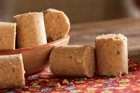

Receita de Paçoca rolha
Hoje vamos aprender a fazer paçoca!

Ingredientes:
1 xícara (chá) de amendoim torrado e sem pele
1/2 xícara (chá) de açúcar refinado
1/4 xícara (chá) de farinha de milho
1 pitada de sal
Modo de preparo:
- Pegue o amendoim torrado, o açúcar, a farinha de milho e o sal, e coloque-os em um triturador ou liquidificador.
Processe até que fiquem bem triturados e homogêneos.
- Pegue forminhas de sua preferência e coloque a mistura, socando com as mãos e modelando.
- Desenforme e está pronto para consumir.